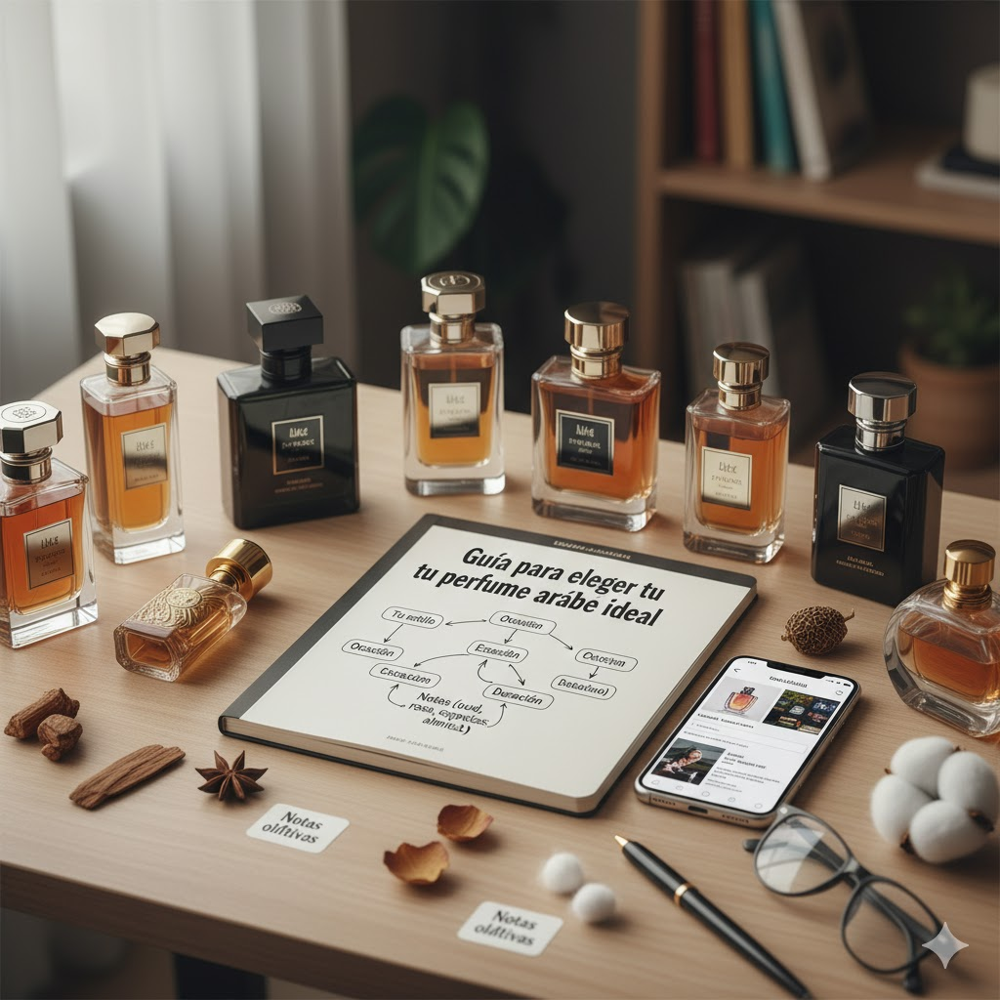
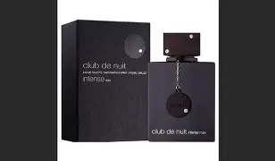

Guía definitiva para elegir tu perfume árabe ideal
Elegir un perfume árabe puede convertirse en una experiencia fascinante. Debido a su intensidad, profundidad y personalidad, estas fragancias requieren entender bien tus gustos y el tipo de aroma que buscás. A diferencia de los perfumes occidentales, las fragancias árabes destacan por su duración, su uso de ingredientes tradicionales y su estilo exótico que se siente único en cada piel.

1. Identificá tu estilo de perfume
Antes de comprar, es fundamental reconocer qué aromas combinan mejor con tu personalidad y tus preferencias. Los perfumes árabes suelen trabajar con familias olfativas muy marcadas:
- Dulces y especiados: vainilla, canela, caramelo, cardamomo. Ideales para noches y clima frío.
- Amaderados: oud, sándalo, cedro. Elegantes, profundos y de larga duración.
- Florales: rosa, jazmín, neroli. Estilo clásico, fresco y romántico.
- Ambarados: resinas cálidas y notas orientales. Firmes, sofisticados e intensos.
- Frescos: cítricos, menta, notas verdes. Ideales para uso diario o verano.

2. Elegí la intensidad adecuada
La mayoría de los perfumes árabes son intensos, pero existen diferentes niveles de fuerza. Elegir el adecuado depende del contexto donde lo vas a usar:
- Suaves: para oficina, clases o días muy calurosos.
- Moderados: para eventos sociales, salidas y uso diario con presencia.
- Intensos: para noches, fiestas, clima frío o situaciones donde querés destacar.
3. ¿Probar perfumes con oud o sin oud?
El oud es el ingrediente más emblemático de la perfumería árabe. Su aroma amaderado, ahumado y profundo no pasa desapercibido. Para muchos es adictivo; para otros, demasiado fuerte.
Si estás empezando, es recomendable elegir fragancias que mezclen oud con notas dulces o florales para suavizar su intensidad. Si ya estás más acostumbrado, podés probar perfumes con oud dominante para obtener la experiencia árabe completa.
4. Perfumes árabes recomendados para comenzar
Si todavía no sabés por dónde empezar, estas opciones son seguras, populares y funcionan muy bien en casi cualquier tipo de piel:
- Khamrah – Lattafa: dulce, especiado, cálido y muy viral.
- Oud for Glory – Lattafa: elegante, potente y con gran proyección.
- Velvet Oud – Lattafa: cálido, económico y perfecto para invierno.
- Shaghaf Oud – Swiss Arabian: una alternativa equilibrada y duradera.
- Midnight Oud – Ard Al Zaafaran: ideal para quienes buscan algo intenso pero accesible.
5. ¿Cuánto duran realmente los perfumes árabes?
Una de las características más destacadas es su fijación. En promedio, un perfume árabe dura entre 8 y 14 horas en piel, pero algunos pueden llegar a las 24 horas o más. En ropa, pueden permanecer durante días.
Su duración es uno de los motivos principales por los que son tan valorados a nivel global.
Conclusión
Elegir un perfume árabe es elegir carácter. Conociendo tus notas preferidas, el nivel de intensidad que buscás y la ocasión de uso, vas a poder encontrar la fragancia perfecta para vos. La perfumería árabe combina tradición, lujo y personalidad en cada botella, haciendo que cada elección sea única.
← Volver a publicaciones